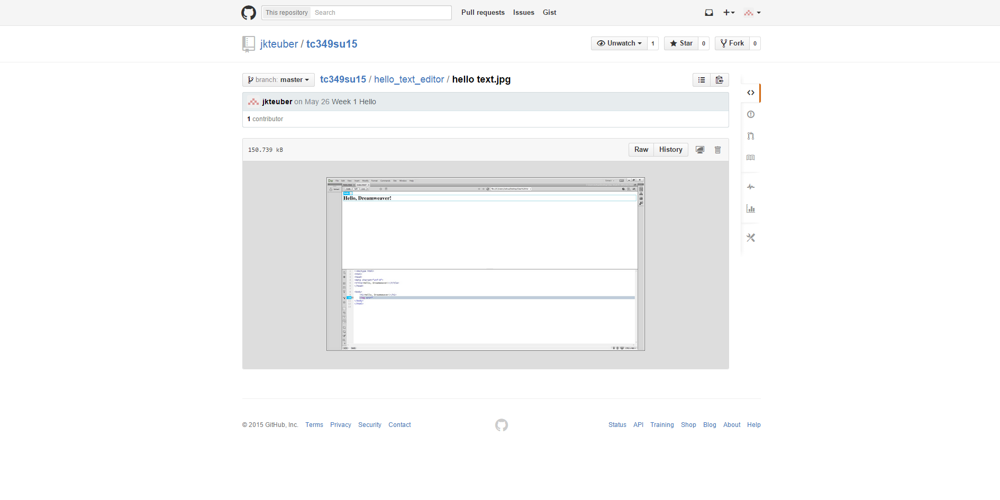

Affordances are parts of design that demonstrate the function of an item.
The github website demonstrates affordance using multiple features. The first are arrows in the top right of the screenshot affording to the buttons being drop down menus. The second are the file system locations, showing github users where exactly they are inside the files. The buttons on the right are also self explanatory, such as the bar graph to show statistics.
Mapping is where the location of items hints to their function
Youtube is a good demonstration of mapping due to the location of their tools. Most of their tools are at the top of the screen, simulating a typical browser. The search bar is in the top center, exactly the same as an internet browser. Also, the home button is at the top left on the youtube site, as most other sites, and web browsers have.
Chunking is splitting up information so as not to overload a person's brain and keep from discouraging them from reading.
Dirty Bomb's website does this very well, by splitting the information up by a large margin when on the same page, and has many pages to go through to separate the information.
Signal to Noise ratio is the amount of relevant information compared to the amount of irrelevant information
Dash creates a very high Signal to Noise ratio by only showing information that is important to the user. These sections are the lessons in the center and the skills to the right side to help people learn
Hick's Law states that the more choices a person has, the longer it will take for them to make a decision
Google is great in regards to Hick's Law because it has only a few available choices on the page, allowing for a quick decision for the user. The site has stuck to what it is most known for, searching the internet, and focuses around that. The website features your commonly visited sites in Google Chrome, as well as an email and image link in the top right, helping the user to make their decision quickly.